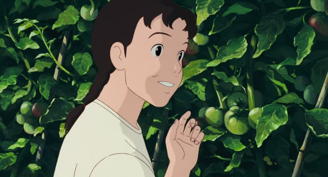
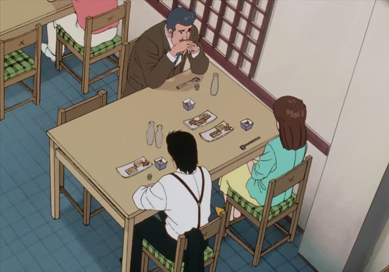
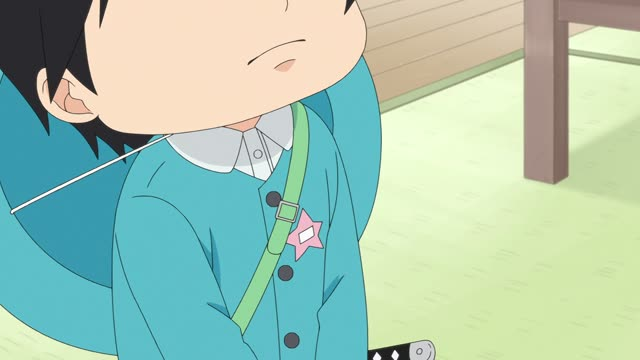

なかなか～ない
Shirokuma Cafe · Episode 19
なかなか覚えられませんよね。
"They're not easy to remember, are they." [all the kinds of penguins]
なかなか + a negative means "not easily, just won't": you try or you wait, and it doesn't happen. なかなか goes before the verb, and the verb is always negative: なかなか覚えられない.
On this card, Shirokuma has been teaching penguin names and admits they're hard to remember. The polite negative ません makes it polite.
Without a negative, なかなか means something else: "quite, pretty" (なかなかおいしい, "pretty tasty").
Death Note · Episode 12
なかなか返事こないな。
"The reply just isn't coming." [waiting for Kira to answer]
On this card, the second Kira has sent Kira a message and is still waiting. なかなか返事こない: the answer just won't come, and the waiting goes on.
Quick Examples
Waiting for the bus in the rain.
バスがなかなか来ないね。
"The bus just won't come."
Waiting and waiting: the most common use.
CasualTelling your teacher about kanji.
漢字がなかなか覚えられません。
"Kanji just won't stick."
PoliteYour baby won't sleep.
子どもがなかなか寝てくれない。
"The kid just won't go to sleep."
CasualA friend's homemade curry surprises you.
これ、なかなかおいしいね。
"This is pretty good!"
No negative: なかなか means "quite". A different meaning.
CasualWith and without
バスが来ない。
"The bus isn't coming." Just a fact.
バスがなかなか来ない。
"The bus just won't come." You've been waiting a while.
Examples from Media
Aggretsuko · Season 2, Episode 1
なかなか決まりませんね。
"It's just not getting decided, is it."
Everyone wants a different trip, so the plan won't settle.
Kekkon Dekinai Otoko · Episode 3
なかなかいいご縁がないんです。
"He just can't find a good match."
A mother about her son who won't marry. Here the negative is ない, "there isn't".
Dungeon Meshi · Episode 20
吹雪、なかなか収まりそうにないね。
"The blizzard doesn't look like it'll stop any time soon."
～そうにない = "doesn't look like it will".
Slam Dunk · Episode 96
なかなかできないわ。
"Not many people would do that."
They helped for a whole week. なかなかできない = hard to do, rare.
Samurai Champloo · Episode 7
でも、なかなか治らなくて。
"But he just isn't getting better."
The negative in the て-form (なくて), and the sentence trails off.

Only Yesterday
その晩、なかなか寝つかれないの。
"That night I just couldn't fall asleep."
She's telling a memory, so the present form stands for the past.

Oishinbo · Episode 34
彼女はなかなかうんと言ってくれない。
"She just won't say yes."
He has been proposing for three years.

Kotaro Lives Alone · Episode 7
なかなか言い出せなくて。
"I just couldn't bring it up."
言い出せない = can't bring yourself to say it.